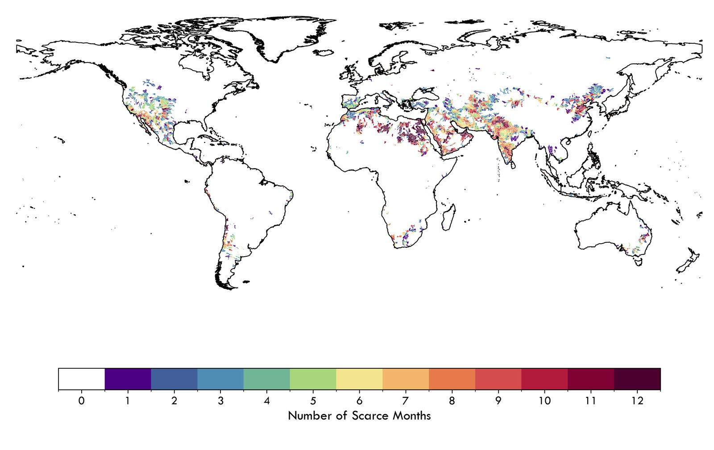
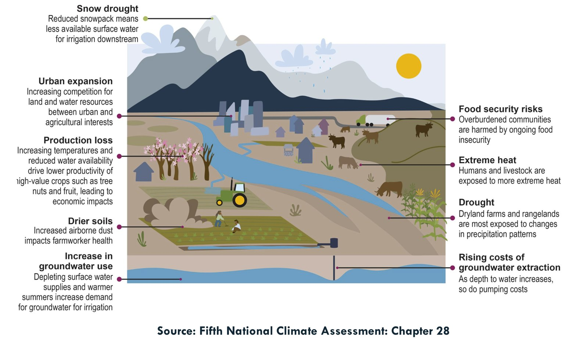

Research
I study irrigation dynamics, water scarcity, and competition for water under climate and socioeconomic change. My work combines AI-enabled remote sensing, hydrologic and crop–water modeling, and geospatial analysis to find practical pathways toward sustainable water and food systems.
Irrigation dynamics
How do fine-scale irrigation dynamics shape environmental sustainability under climate stress?
Irrigated agriculture covers only 24% of cropland yet produces 40% of the world’s food. It is the largest consumer of freshwater and a key driver of aquifer and surface-water depletion. Existing irrigation datasets are coarse and overlook smallholder regions, which limits their use in precision agriculture and water management.
I build fine-scale global irrigation maps that span the 21st century (2000 to present) and capture seasonal dynamics, including MIRCA-OS, GMIA-NEXT, and AEI. On top of these data I assess the sustainability tradeoffs of food production, with the goal of tools that connect irrigation management to measurable outcomes in water availability and ecosystem resilience.

Water scarcity and food
Where does rising water scarcity put food production and supply at risk?
Combining monthly crop and irrigation data with water availability lets me trace when and where farms run short of water, and how those local shortfalls ripple into global food supply. Related work looks at how water saved through efficiency gains could be reinvested to raise U.S. food production.

Open data and policy
What data and incentives do we need to manage agriculture sustainably?
Much of the world’s food production goes unmeasured at the scales where decisions are made. I have assessed the global state of food production data scarcity and contribute to HarvestStat, which harmonizes subnational crop statistics, starting with Sub-Saharan Africa. I also study how conservation policy can be targeted, for example by optimizing cropland conservation payments to reduce nitrogen surplus in the Mississippi River Basin.
Climate and rivers
How does climate change alter water resources and river systems under growing human pressure?
Climate change is shifting temperature, precipitation, river discharge, and sediment dynamics, increasing pressure on water availability, flood risk, and ecosystem stability. The effects are sharpest in data-scarce river basins of Sub-Saharan Africa, where urban growth, agriculture, and hydraulic infrastructure add to climate stress.
This work combines statistically downscaled regional climate projections with multi-model hydrological simulations and one-dimensional morphological modeling. By linking altered flow regimes to channel and delta responses through remote sensing and geomorphological analysis, it offers an integrated way to understand climate–human interactions in rivers and to support adaptive water management.
